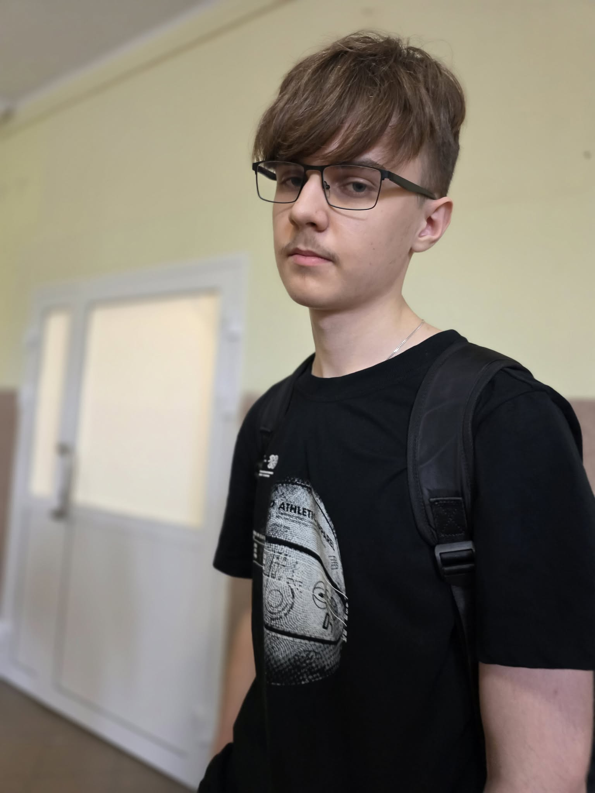

O mnie
Nazywam się Eryk, ale w sieci znajdziesz mnie pod nickiem Szuriken55.
Jestem pasjonatem nowoczesnych technologii, który każdą wolną chwilę poświęca na zgłębianie tajników świata IT oraz analizowanie mechanik w grach.
Moim celem jest połączenie pasji do tworzenia treści z profesjonalnym podejściem do programowania. Stawiam na ciągły rozwój.